Metalurgia · motores de turbina
Evolución de materiales en motores de turbina
De superaleaciones de níquel a compuestos cerámicos: aplicación en motores comerciales y militares.
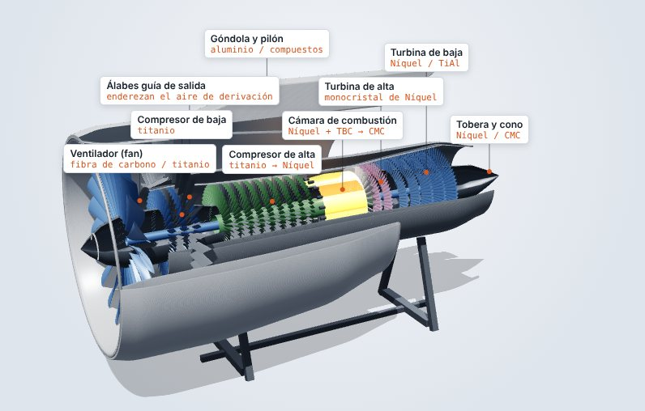
Sección 1
Introducción: por qué el material decide el futuro del motor
Un motor de turbina convierte combustible en empuje, y mientras más caliente trabaja su núcleo, más eficiente es. Por eso la historia de estos motores es, en gran parte, la historia de los materiales capaces de aguantar más temperatura. Hoy el límite ya no es el diseño aerodinámico, sino el material.
1.1La presión económica
Para una aerolínea, el combustible es el gasto más grande. Según IATA, en 2026 representará el 31.4% de los costos de operación, frente al 25.4% de 2025, y la factura mundial subirá de 252 mil a 350 mil millones de dólares. Con un margen de ganancia de apenas 2%, un motor que gaste 1% menos combustible vale millones de dólares al año para una sola flota.
1.2La presión regulatoria
La aviación internacional se comprometió a llegar a cero emisiones netas de CO₂ en 2050. Mientras tanto, las aerolíneas ya pagan por contaminar: cumplir con el esquema CORSIA costará unos 1,700 millones de dólares en 2026, y el combustible sostenible (SAF) apenas cubre el 0.8% del consumo. Gastar menos combustible sigue siendo la forma más directa de emitir menos.
1.3¿Por qué no cambiar de tecnología?
Las baterías actuales guardan unas 20 veces menos energía por kilo que el queroseno, y el hidrógeno líquido ocupa demasiado volumen. Por eso la turbina seguirá dominando durante décadas, y la mejora vendrá de motores más eficientes y de materiales que soporten más calor.
1.4Más calor, más eficiencia
La eficiencia máxima de cualquier máquina térmica la marca el ciclo de Carnot: η = 1 − T fría / T caliente, con temperaturas en kelvin. Con aire a 15 °C, un núcleo a 1,300 °C tiene un límite de 81.7%, y a 1,500 °C sube a 83.8%. Cada grado extra que aguante el material se traduce en eficiencia.
η = 1 − Tfría / TcalienteEs el límite teórico: un motor real queda por debajo, pero sube igual cuando sube la temperatura.
1.5La presión militar
En los cazas la prioridad es otra: empuje, maniobra y, cada vez más, generar electricidad y disipar el calor de radares y sensores. La versión Block 4 del F-35, por ejemplo, necesita cerca de 25% más electricidad. Ahí también el material es el límite.
Sección 2
Disección del motor: cada zona pide un material distinto
Si se recorre un turbofán de adelante hacia atrás, el aire pasa primero por una zona fría y después por una zona caliente. Cada una exige cosas distintas al material, y por eso un motor moderno es una combinación de varios materiales.
2.1Zona fría y zona caliente
En la zona fría, formada por el fan y el compresor, lo que más importa es el peso. El fan genera más del 80% del empuje de un turbofán comercial, y hoy se hace de fibra de carbono; el compresor, que trabaja entre 200 y 700 °C, usa titanio y aleaciones de níquel como el Inconel 718.
En la zona caliente cambia todo. En la cámara de combustión la llama supera los 1,800 °C, y la turbina de alta recibe gases de entre 1,500 y 1,700 °C. Ahí mandan las superaleaciones de níquel con recubrimiento cerámico, y cada vez más los compuestos de matriz cerámica (CMC). La turbina de baja, ya menos caliente (800–1,000 °C), empieza a usar aluminuro de titanio para ahorrar peso.
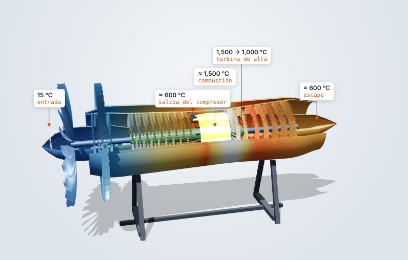
Ver en 3D ↗2.2El álabe de turbina: la pieza más exigida
El álabe de la turbina de alta es la pieza más difícil de todo el motor. Gira a unas 12,500 rpm, recibe gas más caliente que el punto de fusión de su propio metal y lo jala una fuerza centrífuga enorme. Con una masa de unos 300 g y un radio de 0.3 m, la fuerza es F = m·ω²·r ≈ 154,000 N, el peso de unas 16 toneladas colgando de cada álabe. Para aguantarla, el álabe se encaja en el disco con una raíz en forma de abeto.
La misma fórmula sirve al revés: si se sabe cuánta fuerza aguanta la raíz, se puede despejar a cuántas revoluciones se rompería el álabe.
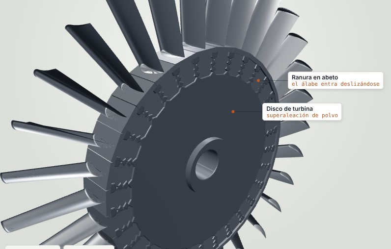
Ver en 3D ↗ω = √(F / m·r)La raíz aguanta F = resistencia × área. Con esa fuerza se despeja la velocidad de giro a la que el álabe se desprendería. Los valores iniciales son de ejemplo: la resistencia real baja con la temperatura y con el tiempo (creep).
2.3El peso siempre cuenta
En ingeniería civil, una viga débil se refuerza agregándole material. En aeroespacial eso no se puede hacer, porque cada kilo extra cuesta combustible durante toda la vida del avión. Por eso cada material se elige buscando el mejor equilibrio entre resistencia, temperatura y densidad.
Sección 3
Lo viejo: superaleaciones de níquel
Durante más de 50 años, la zona caliente del motor se ha hecho con superaleaciones base níquel. Su gran virtud es que mantienen la resistencia a temperaturas donde el acero ya se ablanda.
3.1Inconel 718 y los monocristales
Hay dos familias principales. El Inconel 718 es la superaleación más usada en discos, carcasas y partes del compresor, y trabaja bien hasta unos 650 °C. Para los álabes de la turbina de alta se usan monocristales, como el CMSX-4, el René N5 o el CMSX-10: la pieza entera crece como un solo cristal, sin fronteras de grano. Esas fronteras son justo los puntos débiles donde empieza el creep, la deformación lenta de un metal sometido a calor y carga durante mucho tiempo.
3.2Cómo se fabrica un álabe monocristalino
El álabe se hace por fundición a la cera perdida. Primero se moldea en cera, después se cubre con capas de cerámica hasta formar un cascarón y se derrite la cera. El metal fundido se vierte al vacío en ese molde, que está sobre una placa de cobre enfriada. Luego el molde baja lentamente fuera del horno, de modo que el metal solidifica de abajo hacia arriba.
Al solidificar crecen dendritas con forma de pino, todas en la misma dirección. En la base del molde hay una espiral, el selector de grano, que funciona como un filtro: de los muchos granos que empiezan a crecer, solo uno logra atravesarla, y ese cristal único forma todo el álabe.
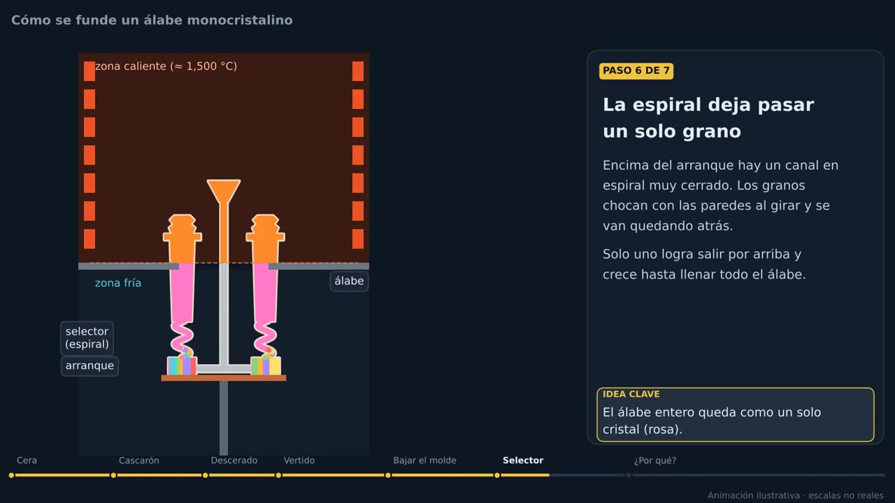
63 s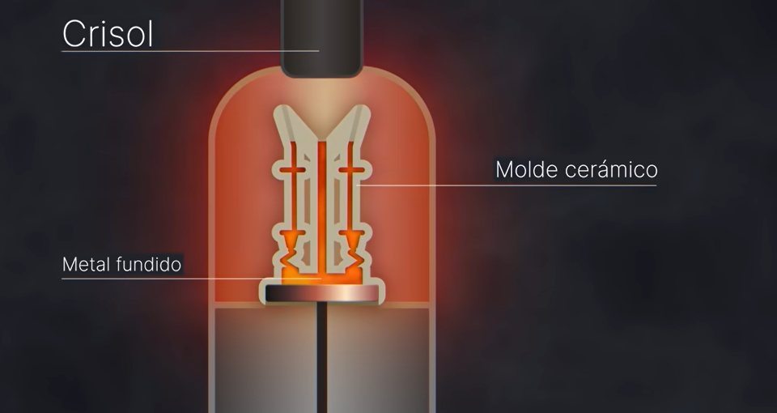
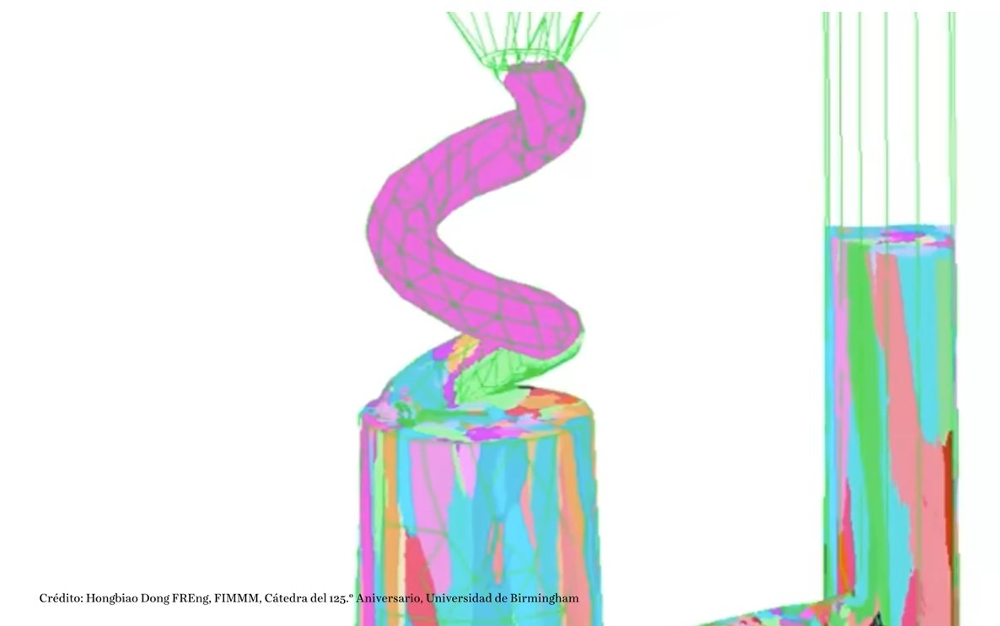
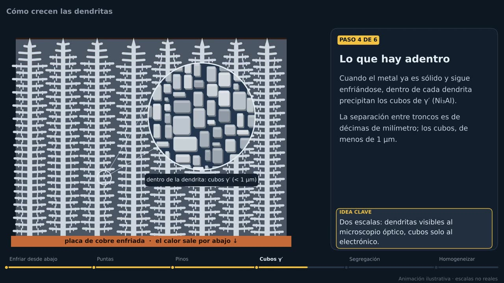
47 s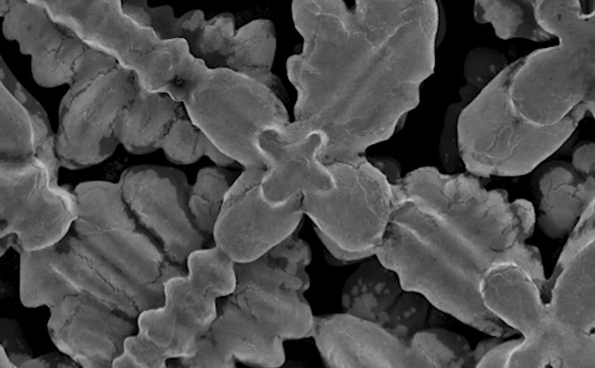
3.3La microestructura: fases γ y γ′
Dentro del cristal conviven dos fases. La fase γ es níquel con los demás elementos acomodados al azar. La fase γ′ (gamma prima) es Ni₃Al ordenado: en cada celda el aluminio ocupa las esquinas y el níquel el centro de las caras.
La γ′ precipita en forma de bloques casi cúbicos de menos de 1 µm, separados por canales delgados de γ. En el CMSX-4 estos bloques ocupan cerca del 70% del volumen. No forman una cuadrícula perfecta: tienen tamaños distintos, están desfasados y los canales no son rectos. Además, cada elemento de la aleación prefiere una fase: el renio y el tungsteno se quedan en los canales, y el aluminio, el titanio y el tantalio en los bloques.
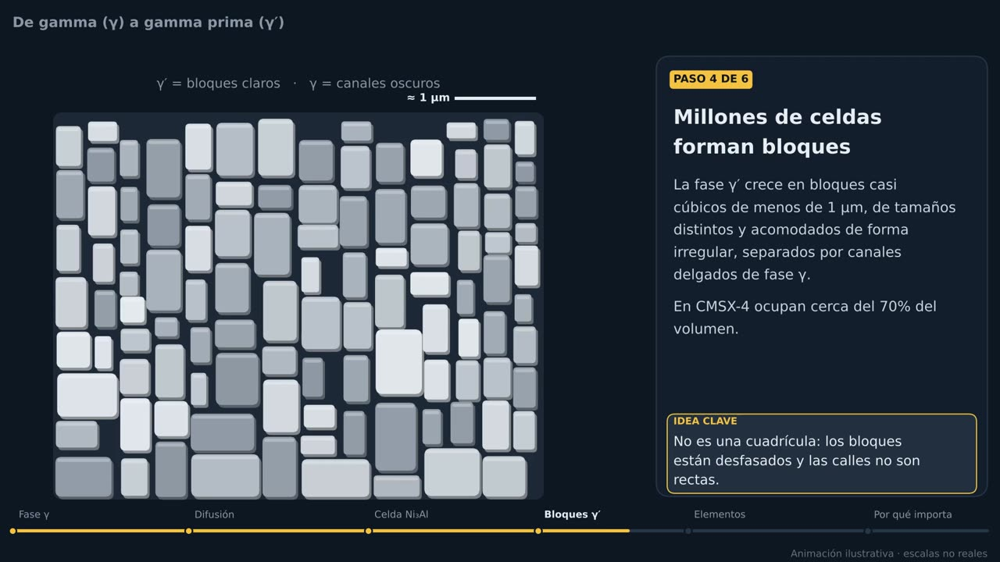
52 s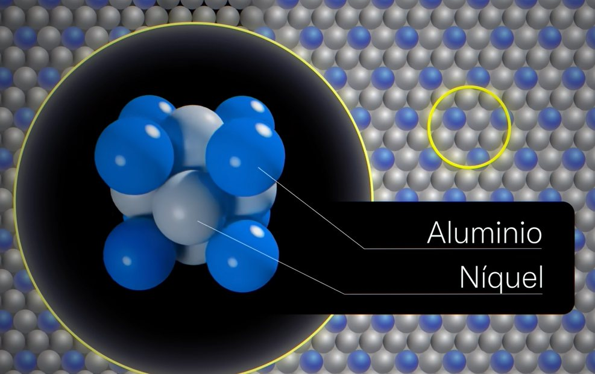
3.4Por qué no se deforma: dislocaciones y creep
Un metal se deforma cuando se mueven dislocaciones, que son defectos en el acomodo de los átomos. En un metal común avanzan con facilidad. En una superaleación, en cambio, la dislocación no puede cortar fácilmente los bloques ordenados de γ′, así que tiene que buscar camino por los canales de γ. Como los bloques están desfasados, ese camino es una escalera que cambia de dirección a cada rato. Al rodear cada bloque, la dislocación se curva y deja un anillo alrededor (mecanismo de Orowan), lo que hace cada vez más difícil seguir deformándola.
Si los bloques estuvieran en una cuadrícula perfecta, habría canales rectos y la dislocación pasaría con mucha más facilidad. Su irregularidad es parte de lo que hace al material tan resistente al creep.
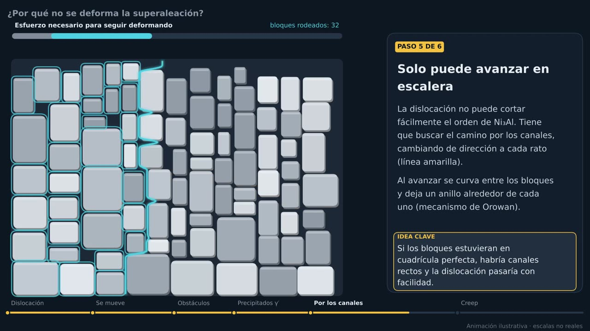
56 s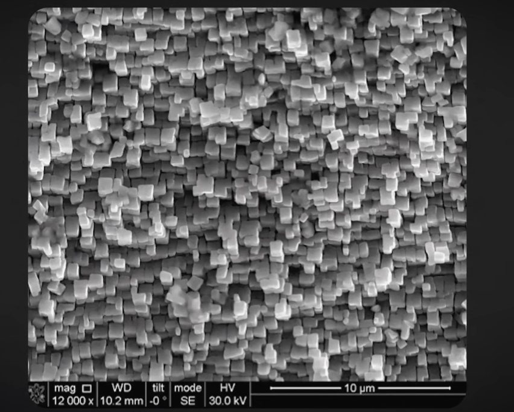
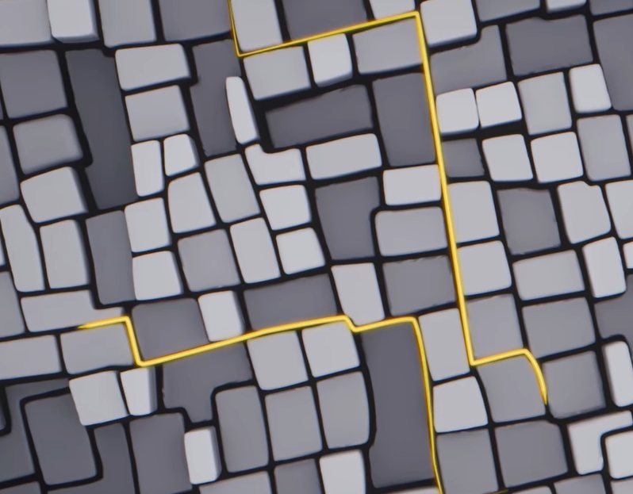
3.5Cómo sobreviven al calor: enfriamiento y TBC
El álabe sobrevive a gases más calientes que su punto de fusión gracias a dos trucos. Es hueco: por dentro recorre aire del compresor, a unos 600 °C, que sale por pequeños agujeros y forma una película que separa el metal del gas. Y por fuera lleva una barrera térmica (TBC) de zirconia estabilizada con itria, una cerámica que conduce muy poco el calor, pegada al metal con una capa de anclaje.
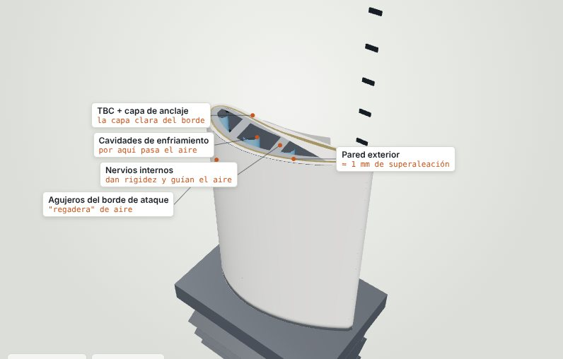
Ver en 3D ↗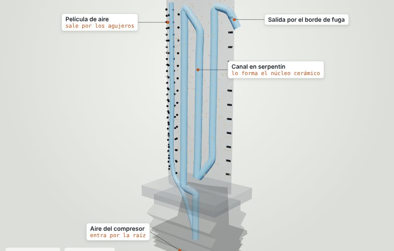
Ver en 3D ↗3.6El límite físico
Estas aleaciones ya trabajan muy cerca de su punto de fusión, y pesan entre 8.2 y 8.7 g/cm³. Su resistencia llega al máximo entre 750 y 850 °C gracias a la fase γ′, mientras que un acero común, en un ensayo a 200 MPa, falla cerca de los 600 °C. El problema es que, para subir más la temperatura, hace falta más aire de enfriamiento, y ese aire se le roba al ciclo del motor, lo que le resta eficiencia.
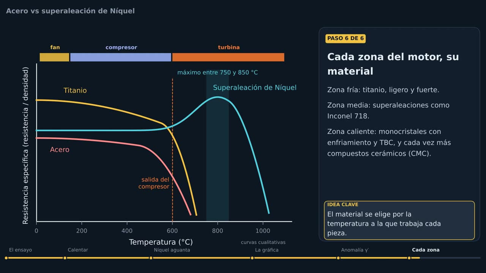
50 s3.7El límite económico: el renio
Los monocristales más avanzados llevan entre 3% y 6% de renio, que mejora mucho la resistencia al creep. Pero el renio no se mina por sí solo: sale como subproducto del cobre y el molibdeno, así que su producción no puede crecer rápido. Según el USGS, en 2025 costó unos 2,600 dólares por kilo, 90% más que en 2024. Por eso fabricantes como GE desarrollaron aleaciones con menos renio y reciclan el metal de álabes viejos. Es un ejemplo de cómo el mercado de una materia prima también empuja a buscar otros materiales.
Sección 4
El punto débil de las cerámicas: arena, polvo y sal
La protección cerámica funciona muy bien en aire limpio, pero el aire real trae arena, polvo, ceniza volcánica y sal, y eso cambia las cosas.
4.1Arena y polvo (CMAS)
La arena y el polvo están hechos de silicatos de calcio, magnesio y aluminio, conocidos como CMAS. Al pasar por la zona caliente se funden y se pegan a las piezas como vidrio. El primer daño es que tapan los agujeros de enfriamiento: sin la película de aire, el metal se calienta más de lo previsto. El segundo es que se infiltran en los poros de la cerámica; cuando el motor se enfría, el CMAS se solidifica dentro, la cerámica pierde flexibilidad, se agrieta y se desprende. Por eso los fabricantes prueban sus motores inyectándoles polvo a propósito; GE sometió las piezas de CMC del GE9X a unos 1,800 ciclos con polvo y residuos.
4.2Sal y corrosión en caliente
Los aviones navales respiran aire con sal, que en las zonas calientes reacciona con las superaleaciones y las corroe. En un portaaviones el ambiente es tan agresivo que los deflectores de la cubierta se enfrían con agua de mar, y el motor trabaja todo el tiempo rodeado de sal.
4.3Por qué importa en dinero
Las aerolíneas que operan en Medio Oriente, el norte de África o la India tienen que llevar sus motores al taller más seguido, y cada visita es muy cara. Los militares lo sufren todavía más, porque operan desde bases en el desierto y vuelan a baja altura, donde ingieren más polvo.
Sección 5
Lo nuevo: compuestos de matriz cerámica (CMC)
Los CMC de carburo de silicio (SiC/SiC) son la siguiente etapa: pesan un tercio que el metal y aguantan unos 1,315 °C, más que el punto de fusión de muchas superaleaciones.
5.1Qué es un CMC
Una cerámica común, como un plato, es dura pero frágil: si se golpea, se rompe de golpe, y eso no sirve en un motor. Un CMC es distinto. Está hecho de fibras de carburo de silicio tejidas y metidas en una matriz del mismo material. Si aparece una grieta, las fibras la frenan, y la pieza no falla de forma repentina.
5.2Su propio recubrimiento: EBC
El carburo de silicio tiene su propia debilidad: se degrada con el vapor de agua que sale de la combustión. Por eso los CMC necesitan una barrera ambiental (EBC), y esa barrera también es atacada por el CMAS. Desarrollar EBC que aguanten ambos es uno de los grandes retos actuales, y una línea de investigación importante de NASA Glenn.
5.3Dónde ya vuelan
El CFM LEAP, que usan el Airbus A320neo y el Boeing 737 MAX, fue el primer motor comercial con CMC en la turbina de alta: lleva 18 shrouds de CMC, que son los anillos estáticos que rodean a los álabes. El GE9X del Boeing 777X fue más lejos, con cinco piezas de CMC en la turbina y el combustor, y gasta 10% menos combustible que el GE90-115B al que reemplaza. Sin embargo, todas estas piezas son estáticas: ningún motor comercial usa todavía álabes giratorios de CMC.
5.4Álabes de cerámica vs álabes de aleaciones de níquel
Las cerámicas, por su lado, se caracterizan por su alta resistencia al calor y su poco peso. Un CMC aguanta hasta unos 1,315 °C con una densidad de apenas 2.7 a 2.9 g/cm³, así que la misma pieza pesa cerca de un tercio y necesita mucho menos aire de enfriamiento. No obstante, su debilidad es la fragilidad: aunque las fibras frenan las grietas, una cerámica sigue siendo menos tolerante a golpes y cargas que un metal. Además, se degrada con el vapor de agua, depende de su recubrimiento y todavía es cara y poco probada en piezas que giran.
Las superaleaciones de níquel, por otro lado, son muy tenaces y resistentes a cargas mecánicas a alta temperatura, y tienen más de 50 años de experiencia en vuelo. El CMSX-4 aguanta cerca de 1,100 °C en el metal, y más con enfriamiento y barrera térmica. Su desventaja es el peso, de 8.2 a 8.7 g/cm³, que ya trabajan al límite de su temperatura y que necesitan mucho aire de enfriamiento y elementos caros como el renio.
En pocas palabras, la cerámica gana en temperatura y peso, y el níquel gana en tenacidad y confianza. Por eso hoy los CMC se usan en piezas estáticas y el níquel sigue en las que giran.
masa = densidad × volumenSección 6
El porqué económico: un material nuevo cuesta décadas y miles de millones
Un material no llega al avión solo porque funcione en el laboratorio. Alguien tiene que pagar por desarrollarlo, certificarlo y, sobre todo, fabricarlo en volumen.
6.1La inversión
Los CMC tardaron más de 30 años en volar: GE obtuvo su primera patente sobre ellos en 1986, y la primera pieza voló en el LEAP a mediados de la década de 2010. En unos diez años, GE gastó más de 1,500 millones de dólares para llevarlos al mercado. No bastaba con inventar el material: había que construir una cadena completa. Antes, la única fábrica grande de fibra de carburo de silicio estaba en Japón, así que GE abrió en Huntsville, Alabama, una planta de fibra y otra de cinta de CMC, que juntas costaron más de 200 millones de dólares; las piezas terminadas se hacen en Asheville, Carolina del Norte. La planta de fibra recibió 21.9 millones de la Fuerza Aérea de Estados Unidos, porque el gobierno también necesita esa fibra para sus motores.
6.2Por qué vale la pena
GE estima que los CMC mejoran la eficiencia de combustible entre 1% y 2%, y que reducir 1% el consumo le ahorra a una aerolínea más de un millón de dólares al año. Multiplicado por miles de motores que vuelan 20 o 30 años, el ahorro justifica la inversión. Además, una pieza más durable pasa más tiempo en el ala y menos en el taller.
6.3Quién paga
El desarrollo combina dinero privado y público. Las aerolíneas pagan indirectamente, al comprar motores más caros pero más eficientes, y los gobiernos financian la parte de mayor riesgo porque la tecnología también sirve para defensa. El precio del petróleo decide el ritmo: en los años 80, GE desarrolló un motor de hélice abierta muy eficiente, el GE36, pero se abandonó cuando el petróleo bajó de precio.
6.4México en la cadena
México también forma parte de esta industria. Safran opera en el país desde hace 35 años, con 21 instalaciones y más de 16,000 empleados, y es el mayor empleador aeroespacial de México. En Querétaro fabrica piezas para motores CFM y ensambla motores LEAP, y en junio de 2026 abrió un taller de mantenimiento de motores CFM56 y LEAP con una inversión de 140 millones de dólares. Es decir, los motores que usan CMC también se ensamblan y reparan aquí.
Sección 7
Comercial vs militar: mismos materiales, necesidades opuestas
El motor comercial se diseña para gastar poco y durar mucho; el militar, para rendir al máximo aunque dure menos. Esa diferencia cambia dónde y cuándo entra cada material.
7.1Lado comercial: la fiabilidad manda
Los motores de turbina actuales fallan más o menos una vez cada 375,000 horas de vuelo, frente a una vez cada 3,200 horas en los motores de pistón. Esa fiabilidad permitió la certificación ETOPS, que deja a bimotores como el B787 o el A350 volar a más de 300 minutos de un aeropuerto alternativo, y por eso desaparecieron los aviones de tres y cuatro motores. Si un avión depende de solo dos motores, cada uno debe ser muy confiable, así que la aviación comercial mete los materiales nuevos con cautela, primero en piezas estáticas y con certificación de la FAA o la EASA. En estos motores, además, cerca del 90% del aire rodea el núcleo y solo el 10% pasa por él.
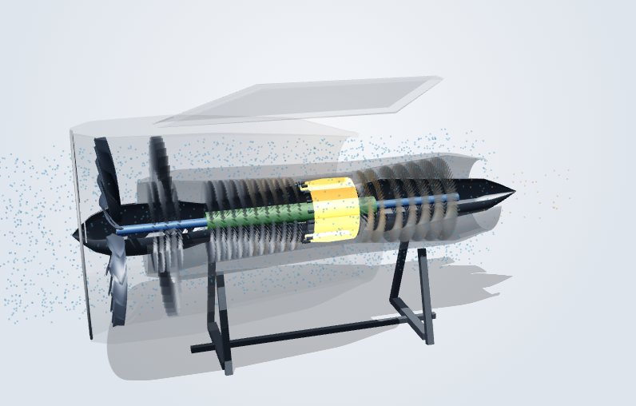
Ver en 3D ↗7.2Lado militar: el rendimiento manda
En un caza manda el rendimiento. El programa soviético I-90 resumió los requisitos de quinta generación como «5S + 1M», entre ellos el supercrucero (volar supersónico sin postcombustor), la baja firma térmica y el mantenimiento sencillo en bases improvisadas. Cada uno castiga al material: el supercrucero obliga al núcleo a trabajar muy caliente durante mucho tiempo, la firma térmica exige controlar la temperatura del escape y las bases improvisadas significan más polvo. Su motor, el AL-41F, tenía derivación variable y toberas orientables, pero sufrió problemas de vida útil: cuando se lleva un motor al límite, el material es lo primero que falla.
7.3El caso del F-35: electricidad y calor
El motor F135 del F-35 da unas 43,000 libras de empuje con postcombustor, así que el empuje no era su problema. El problema es que la versión Block 4 del avión necesita cerca de 25% más electricidad, y toda esa electrónica genera calor que el motor tiene que disipar. Había dos opciones: un motor adaptativo nuevo, unos 25% más eficiente pero más caro y que no cabía en el F-35B de despegue vertical, o una mejora del núcleo del F135 existente, más barata y compatible con las tres versiones.
En marzo de 2023 el Pentágono eligió la mejora del núcleo. Ya había más de 1,500 motores F135 entregados a 20 países, y era más barato mejorarlos que cambiarlos. En septiembre de 2026 la mejora pasó una revisión de diseño clave y, junto con un nuevo sistema de enfriamiento, promete 7% más alcance y empuje y el doble de capacidad de enfriamiento. La lección es que, incluso en lo militar, no siempre gana la mejor tecnología, sino la que se ajusta al presupuesto y a la flota que ya existe.
7.4No todo motor militar es de caza
También hay aviones militares de apoyo, como el E-3 Sentry (AWACS), que usa la célula de un Boeing 707 y motores pensados para vuelos de 8 horas, no para maniobrar. Su motor tarda unos 7 segundos en responder a un cambio de potencia, mientras que un caza necesita respuesta casi inmediata. Por eso, cuando este trabajo habla de motor militar, se refiere a los motores de combate.
En resumen, el motor comercial busca bajo consumo y larga vida, tiene una relación de derivación alta (cerca de 10:1 en el GE9X), no usa postcombustor y vuela en régimen estable; lo deciden la aerolínea y la autoridad civil. El motor de combate busca empuje, maniobra, electricidad y enfriamiento, tiene derivación baja (menor a 1:1), usa postcombustor, aguanta cambios bruscos de hasta 6.5 G y dura menos; lo deciden el gobierno y su presupuesto. Hoy los comerciales usan CMC solo en piezas estáticas, mientras que los militares los prueban en zonas más calientes, incluso en piezas que giran.
Sección 8
Necesidades futuras: hacia dónde van los materiales
La aviación comercial y la militar van hacia el mismo lugar, aunque por razones distintas: núcleos más pequeños y más calientes, hechos cada vez más de CMC.
8.1Comercial: el motor de fan abierto
CFM, la sociedad entre GE y Safran, desarrolla el programa RISE, un motor sin carcasa alrededor del fan. Busca gastar más de 20% menos combustible y emitir 20% menos CO₂ que los motores más eficientes de hoy, y podría entrar en servicio a mediados de la década de 2030. Para lograrlo necesita un fan enorme de compuestos de carbono y un núcleo compacto y más caliente, con CMC en la zona caliente, y debe funcionar con 100% de combustible sostenible. Rolls-Royce y Pratt & Whitney siguen otro camino, con turbofanes con caja reductora como el UltraFan, pero con la misma necesidad de materiales que aguanten más calor.
8.2Militar: motores adaptativos de sexta generación
La Fuerza Aérea de Estados Unidos desarrolla, dentro del programa NGAP, dos motores rivales para el caza F-47: el XA102 de GE y el XA103 de Pratt & Whitney. Ambos tienen un tercer flujo de aire que les permite cambiar entre un modo eficiente y uno de máximo empuje, y que además sirve para enfriar la electrónica. El F-47 debería volar por primera vez en 2028, pero por recortes de presupuesto el motor no estaría listo para integrarse hasta 2030, así que es posible que los primeros aviones vuelen con un motor de la generación anterior.
8.3Lo que viene en materiales
El gran objetivo pendiente son los álabes giratorios de CMC en la turbina de alta. Para llegar ahí hacen falta barreras ambientales que resistan la arena y el vapor de agua. Al mismo tiempo se buscan superaleaciones con menos renio, para no depender de una materia prima escasa, y crece la fabricación aditiva: el GE9X ya lleva unas 300 piezas impresas en 3D, que juntan varias partes en una sola.
8.4El factor que decide el ritmo
La historia muestra que la tecnología avanza más rápido cuando el combustible es caro. El fan abierto se abandonó en los 80 cuando bajó el petróleo; hoy, con el combustible por encima del 30% de los costos y metas de emisiones para 2050, la presión para adoptarlo es mucho mayor.
Sección 9
Conclusión: un motor híbrido, elegido según la necesidad
9.1El motor híbrido
El motor del futuro no será todo de cerámica, sino híbrido, con cada material donde mejor rinde. Las piezas con grandes cargas mecánicas, como los discos y las raíces de los álabes, seguirán siendo de superaleación de níquel. Las zonas de más calor, como el combustor, los shrouds y las toberas, serán de CMC. Y la zona fría usará compuestos de carbono para ahorrar peso.
9.2Qué decide la elección del material
La elección no depende solo de lo que la ciencia permite, sino de lo que cada usuario necesita y puede pagar. La aviación comercial adopta los CMC porque ahorran combustible y ayudan con las metas de emisiones, pero lo hace despacio porque necesita motores que no fallen. La militar los necesita para más empuje, electricidad y enfriamiento, aunque también ahí manda el presupuesto, como mostró la decisión sobre el F135. Y las materias primas como el renio, junto con las inversiones en fábricas, deciden qué tan rápido una tecnología pasa del laboratorio al avión.
En resumen, la metalurgia de los motores avanza al ritmo de tres cosas: el precio del combustible, las exigencias de los gobiernos y el dinero disponible para fabricar a gran escala.
Material interactivo
Modelos 3D
Los dos modelos se pueden girar con el mouse o con el dedo. Cada uno tiene vistas y un recorrido guiado que explica sus partes.
Referencias
Fuentes
- GE Aerospace. GE9X engine achieves FAA certification
- GE Aerospace. GE Aviation building U.S. blueprint to industrialize CMCs
- GE Aerospace (2016). GE Aviation to build unique materials factories
- Airframer (2016). 18 shrouds de CMC por motor LEAP
- GE Reports (2021). Programa CFM RISE
- USGS (2026). Mineral Commodity Summaries: Rhenium
- MDPI Resources (2020). Riesgo de suministro de elementos de superaleaciones
- AltexSoft (2026). IATA: el combustible llega a 350 mil millones
- TravelMole (2025). Pronósticos IATA 2026: CORSIA y SAF
- Safran (2026). Nuevo taller de mantenimiento en Querétaro
- Cluster Industrial (2026). Safran inaugura en Querétaro complejo de 140 MDD
- Breaking Defense (2026). F-35 engine upgrade clears key design review
- DefenseScoop (2026). Next-gen engine ready for integration by 2030
- Breaking Defense (2026). Another year delay for next-gen engines
- Video. ¿Qué pasa si entra arena en el motor de un avión?
- Hidalgo, S. (2020). Claves para entender las estructuras
- The Wild Project (2025). ¿Por qué no hay aviones eléctricos?
Videos sin enlace: El caza de 5ª generación soviético que nunca fue; El E-3 Sentry AWACS; Todo sobre los portaviones de Estados Unidos; video de Veritasium en español sobre los álabes de turbina.